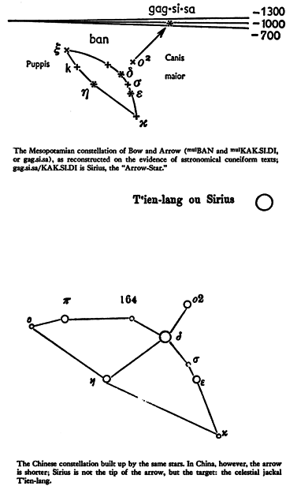
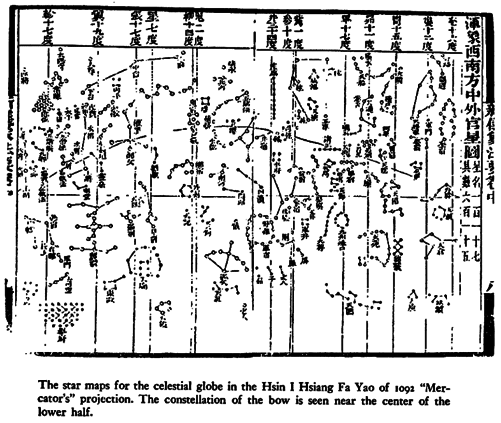
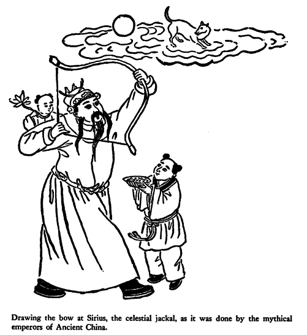
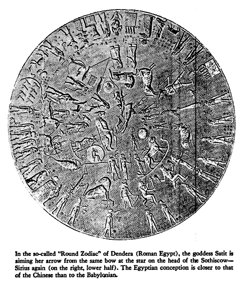
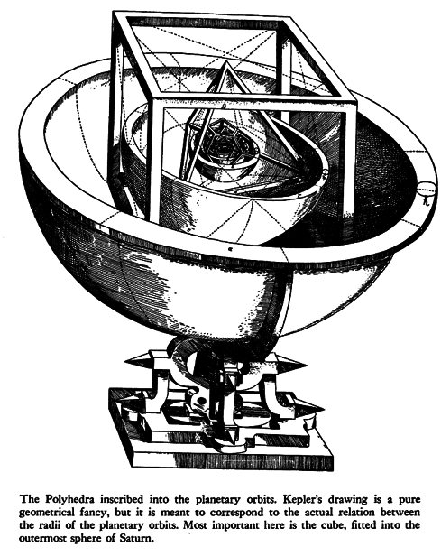

XV. The Waters from the Deep
The glacier knocks in the cup-
board,
The desert sighs in the bed,
And the crack in the tea cup
opens
A lane to the land of the dead.
W. H. AUDEN, "As I Walked
Out One Evening"
THERE IS A TRADITION from Borneo of a "Whirlpool island" with a tree that allows a man to climb up into heaven and bring back useful seeds from the "land of the Pleiades." [1] The Polynesians have not made up their mind, apparently, concerning the exact localization of their whirlpool which serves in most cases as entrance to the abode of the dead; it is supposed to be found "at the end of the sky," and "at the edge of the Milky Way." [2]
On this side of the Atlantic the Cuna Indians also knew the basic scheme, [3] although they, too, failed to give the accepted localization: "God's very own whirlpool" (tiolele piria) was right beneath the Palluwalla tree, "Saltwater-Tree," and when the Sun-God, or the Tapir, a slightly disguised Quetzalcouatl, chopped down the tree, saltwater gushed forth to form the oceans of the world.
There are three elements here, which combine into a curious tangle: (a) the whirlpool represents, or is, the connection of the world of the living with the world of the dead; (b) a tree grows close to it, frequently a life-giving or -saving tree; (c) the whirl came into being because a tree was chopped down or uprooted, or a mill's axle unhinged, and the like. This basic scheme works into many variants and features in many parts of the world, and it provides a very real paradox or conundrum: it is as if the particular waters hidden below tree, pillar, or mill's axle waited only for the moment when someone should remove that plug — tree, pillar, or mill's axle — to play tricks.
This is no newfangled notion. Alfred Jeremias remarks casually, "The opening of the navel brings the deluge. When David wanted to remove the navel stone in Jerusalem, a flood was going to start (see below, p. 220). In Hierapolis in Syria the altar of Xisuthros. (= Utnapishtim) was shown in the cave where the flood dried up." [4]
The pattern reveals itself in the Indonesian Rama epic. [5] When Rama is building the huge dike to Lanka (Ceylon) the helpful monkeys throw mountain after mountain into the sea, but all of them vanish promptly. Enraged, Rama is going to shoot his magic arrow into the unobliging sea, when there arises a lady from the waters who warns him that right here was a hole in the ocean leading to the underworld, and who informs him that the water in that hole was called Water of Life.
Rama would seem to have won out with his threat since the dike was built. But the same story comes back in Greece when Herakles crosses the sea in order to steal the cattle of Geryon. Okeanos, represented here as a god, works up the waters into a tumult which are the waters of the original flood; Herakles threatens with his drawn bow, and calm is re-established.
Neither whirlpool nor confluence are mentioned in these cases, but they clearly extend to them. This gives great importance to the Catlo'ltq story from the American Northwest that is paradigmatic. (see chapter XXII) of the maiden who shoots her arrow into the "navel of the waters which was a vast Whirlpool" thus winning fire. Some very fundamental idea must be lurking behind the story, and a pretty old one, since it was said of Ishtar that it is "she who stirs up the apsu before Ea." [6]
A strange pastime for the heavenly queen, but it seems to have been a rather celestial sport. The eighth Yasht of the Avesta, [7] dedicated to Sirius-Tishtriya, says of this star: "We worship the splendid, brilliant Tishtriya, which soars rapidly to Lake Vurukasha, like the arrow quick-as-lightning, which Urxsa the archer, the best archer among the Aryans, shot from Mount Aryioxsutha to Mount Huvanvant." [8] And what does Sirius do to this sea? It causes "Lake Vurukasha to surge up, to flood asunder, to spread out; at all shores surges Lake Vurukasha, the whole center surges up" (Yt. 8.31; see also 5.4). Whereas Pliny [9] wants to assure us that "the whole sea is conscious of the rise of that star, as is most clearly seen in the Dardanelles, for sea-weed and fishes float on the surface, and everything is turned up from the bottom." He also remarks that at the rising of the Dog-Star the wine in the cellars begins to stir up and that the still waters move (2.107) — and the Avesta offers as explanation (Yt. 8.41) that it is Tishtriya, indeed, "by whom count the waters, the still and the flowing ones, those in springs and in rivers, those in channels and in ponds." [10]
This is, however, no Iranian invention: the ritual text of the Babylonian New Year addresses Sirius as "mul.KAK.SI.DI. who measures the depth of the Sea." mul is the prefix announcing the star, KAK.SI.DI means "arrow," and it is this particular arrow which is behind most of the bewildering tales of archery. The bow from which it is sent on its way is a constellation, built from stars of Argo and Canis Major, which is common to the spheres of Mesopotamia, Egypt and China. [11] And since the name Ishtar is shared by both Venus and Sirius, one may guess who "stirs up the apsu before Ea."

And here is what the "fire" accomplished, according to a Finnish rune of origin, [12] after it had been "cradled . . . over there on the navel of the sky, on the peak of the famous mountain," when it rushed straightaway through seven or nine skies and fell into the sea: "The spark . . . rolled . . . to the bottom of Lake Aloe, roaring it rushed to the bottom of the sea, down into the narrow depression (?). This Lake Aloe then, thrice in the summer night, rose foaming to the height of its firs, driven in fury beyond its banks. Thereupon again Lake Aloe thrice in the summer night dried up its waters to the bottom, its perch on the rocks, its pope (small fishes) on the skerries."
A violent spark this seems to have been; yet — is it not also said of the old Sage: "Vainamoinen in the mouth of the whirlpool boils like fire in water"? [13] Which goes to show that mythical "fire" means more than meets the eye. Actually, the enigmatical events in "Lake Aloe" cannot be severed from those occurring in lake Vurukasha and the coming into being of the "three outlets," the first of which had the name Hausravahf/Kai Khusrau (see chapter XIII, "Of Time and the Rivers," p. 201).

Before we move on to many motifs which will be shown as related to the same "eddy-field" or whirl, it is appropriate to quote in full a version of the fire and water story from the Indians of Guyana. This not only provides charming variations, but presents that rarest of deities, a creator power neither conceited nor touchy nor jealous nor quarrelsome nor eager to slap down unfortunates with "inborn sin," but a god aware that his powers are not really unlimited. He behaves modestly, sensibly and thoughtfully and is rewarded with heartfelt cooperation from his creatures, at least from all except for the usual lone exception.
The Ackawois of British Guiana say that in the beginning of the world the great spirit Makonaima (or Makunaima; he is a twin-hero; the other is called Pia) created birds and beasts and set his son Sigu to rule over them. Moreover, he caused to spring from the earth a great and very wonderful tree, which bore a different kind of fruit on each of its branches, while round its trunk bananas, plantains, cassava, maize, and corn of all kinds grew in profusion; yams, too, clustered round its roots; and in short all the plants now cultivated on earth flourished in the greatest abundance on or about or under that marvelous tree.
In order to diffuse the benefits of the tree all over the world, Sigu resolved to cut it down and plant slips and seeds of it everywhere, and this he did with the help of all the beasts and birds, all except the brown monkey, who, being both lazy and mischievous, refused to assist in the great work of transplantation. So to keep him out of mischief Sigu set the animal to fetch water from the stream in a basket of open-work, calculating that the task would occupy his misdirected energies for some time to come.
In the meantime, proceeding with the labour of felling the miraculous tree, he discovered that the stump was hollow and full of water in which the fry of every sort of fresh-water fish was swimming about. The benevolent Sigu determined to stock all the rivers and lakes on earth with the fry on so liberal a scale that every sort of fish should swarm in every water.
But this generous intention was unexpectedly frustrated. For the water in the cavity, being connected with the great reservoir somewhere in the bowels of the earth, began to overflow; and to arrest the rising flood Sigu covered the stump with a closely woven basket. This had the desired effect. But unfortunately the brown monkey, tired of his fruitless task, stealthily returned, and his curiosity being aroused by the sight of the basket turned upside down, he imagined that it must conceal something good to eat. So he cautiously lifted it and peeped beneath, and out poured the flood, sweeping the monkey himself away and inundating the whole land. Gathering the rest of the animals together Sigu led them to the highest points of the country, where grew some tall coconut-palms. Up the tallest trees he caused the birds and climbing animals to ascend; and as for the animals that could not climb and were not amphibious, he shut them in a cave with a very narrow entrance, and having sealed up the mouth of it with wax he gave the animals inside a long thorn with which to pierce the wax and so ascertain when the water had subsided. After taking these measures for the preservation of the more helpless species, he and the rest of the creatures climbed up the palm-tree and ensconced themselves among the branches.
During the darkness and storm which followed, they all suffered intensely from cold and hunger; the rest bore their sufferings with stoical fortitude, but the red howling monkey uttered his anguish in such horrible yells that his throat swelled and has remained distended ever since; that, too, is the reason why to this day he has a sort of bony drum in his throat.
Meanwhile Sigu from time to time let fall seeds of the palm into the water to judge of its depth by the splash. As the water sank, the interval between the dropping of the seed and the splash in the water grew longer; and at last, instead of a splash the listening Sigu heard the dull thud of the seeds striking the soft earth. Then he knew that the flood had subsided, and he and the animals prepared to descend. But the trumpeter-bird was in such a hurry to get down that he flopped straight into an ant's nest, and the hungry insects fastened on his legs and gnawed them to the bone. That is why the trumpeter bird has still such spindle shanks. The other creatures profited by this awful example and came down the tree cautiously and safely.
Sigu now rubbed two pieces of wood together to make fire, but just as he produced the first spark, he happened to look away, and the bush-turkey, mistaking the spark for a fire-fly, gobbled it up and flew off. The spark burned the greedy bird's gullet, and that is why turkeys have red wattles on their throats to this day.
The alligator was standing by at the time, doing no harm to anybody; but as he was for some reason an unpopular character, all the other animals accused him of having stolen and swallowed the spark. In order to recover the spark from the jaws of the alligator Sigu tore out the animal's tongue, and that is why alligators have no tongue to speak of down to this very day [14]


There are many more stories over the world of a plug whose removal causes the flood: with the Agaria, an iron smith tribe of Central India, it is the breaking of a nail of iron whch causes their Golden Age town of Lohripur to be flooded. [15] According to the Mongolians, the Pole star is "a pillar from the firm standing of which depends the correct revolving of the world, or a stone which closes an opening: if the stone is pulled out, water pours out of the opening to submerge the earth." [16] In the Babylonian myth of Utnapishtim," Nergal (the God of the Underworld) tears out the posts; forth comes Ninurta and causes the dikes to follow" (GE 11.101 f.). But the new thing to be faced is the appearance of the Ark in the flood, Noah's or another's.
The first ark was built by Utnapishtim in the Sumerian myth; one learns in different ways that it was a cube — a modest one, measuring 60 x 60 x 60 fathoms, which represents the unit in the sexagesimal system where 60 is written as 1. In another version, there is no ark, just a cubic stone, upon which rests a pillar which reaches from earth to heaven. The stone, cubic or not, is lying under a cedar, or an oak, ready to let loose a flood, without obvious reasons.
Confusing as it is, this seems to provide the new theme. In Jewish legends, it is told that "since the ark disappeared there was a stone in its place . . . which was called foundation stone." It was called foundation stone "because from it the world was founded (or started)." And it is said to lie above the Waters that are below the Holy of Holies.
This might look like a dream sequence, but it is buttressed by a very substantial tradition, taken up by the Jews but to be found also in Finno-Ugrian tradition. [17] The Jewish story then goes on:
When David was digging the foundations of the Temple, a shard was found at a depth of 1500 cubits. David was about to lift it when the shard exclaimed: "Thou canst not do it". "Why not?" asked David. "Because I rest upon the abyss". "Since when"? "Since the hour in which the voice of God was heard to utter the words from Sinai, 'I am the Lord, your God,' causing the world to quake and sink into the Abyss. I lie here to cover up the Abyss."
Nevertheless David lifted the shard, and the waters of the Abyss rose and threatened to flood the earth. Ahithophel was standing by and he thought to himself: "Now David shall meet with his death and I shall be king." Just then David said: "Whoever knows how to stem the tide of waters and fails to do it, will one day throttle himself."
Thereupon Ahithophel had the name of God inscribed upon the shard, and the shard thrown into the Abyss. The waters at once commenced to subside, but they sank to so great a depth that David feared the earth might lose her moisture, and he began to sing the fifteen "Songs of Ascents," to bring the waters up again.
The foundation stone here has become a shard and its name in tradition is Eben Shetiyyah, which is derived from a verb of many meanings: [18] "to be settled, satisfied; to drink; to fix the warp, to lay the foundations of," among which "to fix the warp" is the most revealing, and a reminder of the continuing importance of "frames." Within that "frame" there is a surging up and down of the waters below (as in the Phaedo myth) which suggests catastrophes unrecorded by history but indicated only by the highly colored terminology of cosmologists. Had they only known of a Cardan suspension, the world might have been conceived as more stable.
Hildegard Lewy's researches [19] on Eben Shetiyyah brought up a passage in the Annals of Assur-nasir-apli in which the new temple of Ninurta at Kalhu is described as founded at the depth of 120 layers of bricks down "to the level of the waters," or, down to the water table. This comes back to the waters of the deep in their natural setting. But what people saw in them is something else again. If David and the Assyrian king dug down to subsoil water, so did the builders of the Ka'aba in Mecca. In the interior of that most holy of all shrines there is a well, across the opening of which had been placed, in pre-Islamic times, the statue of the god Hubal. Al-Biruni says that in the early Islamic period this was a real well, where pilgrims could quench their thirst at least at the time of the Arab pilgrimage. The statue of Hubal had been meant to stop the waters from rising. According to the legends, the same belief had once been current in Jerusalem. Hence the holy shard. But Mecca tells more. Hildegard Lewy points out that, in pre-Islamic days, the god Hubal was Saturn, and that the Holy Stone of the Ka'aba had the same role, for it was a cube, and hence originally Saturn. Kepler's polyhedron inscribed in the sphere of Saturn is only the last witness of an age-old tradition.
The humble little shard was brought in by pious legend to try to say that what counted was the power of the Holy Name. But the real thing was the cube: either as Utnapishtim's ark or, in other versions, as a stone upon which rests a pillar which reaches from earth to heaven. Even Christ is compared to "a cube-shaped mountain, upon which a tower is erected." [20] Hocart writes that "the Sinhalese frequently placed inside their topes a square stone representing Meru. If they placed in the center of a tope a stone representing the center of the world it must have been that they took the tope to represent the world" [21] — which goes without saying. But it is said otherwise that this stone, the foundation stone, lies under a great tree, and that from under the stone "a wave rose up to the sky."
This sounds like a late mixture, with no reasons given; the way to unscramble the original motifs is to take them separately.

But first, some stock-taking is in order at this point. There are a number of figures to bring together. The brown monkey, father of mischief in Sigu's idyllic creation, is familiar under many disguises. He is the Serpent of Eden, the lone dissenter. He is Loke who persuaded the mistletoe not to weep over Balder's death, thus breaking the unanimity of creatures. Sigu himself, benevolent king of the Golden Age, is an unmistakably Saturnian figure, who dwelt among his creatures, and so is lahwe, at least when he still "walked with Adam in the garden." A ruler who "means well" is a Saturnian character. No one but Saturn dwelt among men. Says an Orphic fragment: "Orpheus reminds us that Saturn dwelt openly on earth and among men." [22] Dionysius of Halicarnassus (1.36.1) writes: "Thus before the reign of Zeus, Kronos ruled on this very earth" to which Maximilian Mayer crisply annotates: "We find no mention anywhere of such an earthly sojourn on the part of Zeus." [23] In a similar way, Sandman Holmberg states with respect to Ptah, the Egyptian Saturn: "The idea of Ptah as an earthly king returns again and again in Egyptian texts," and also points to "the remarkable fact that Ptah is the only one of the Egyptian gods who is represented with a straight royal beard, instead of with a bent beard." [24]
The Saturnalia, from Rome to Mexico, commemorated just this aspect of Saturn's rule, with their general amnesties, masters serving slaves, etc., even if Saturn was not always directly mentioned. When this festival was due in China, so to speak "sub delta Geminorum" — more correctly, delta and the Gemini stars 61 and 56 of Flamsteed — "there was a banquet in which all hierarchic distinctions were set aside . . . The Sovereign invited his subjects through the 'Song of Stags'." [25]
The cube was Saturn's figure, as Kepler showed in his Mysterium Cosmographicum; this is the reason for the insistence on cubic stones and cubic arks. Everywhere, the power who warns "Noah" and urges him to build his ark is Saturn, as Jehovah, as Enki, as Tane, etc. Sigu's basket stopper was obviously an inadequate version of the cube seen through the fantasy of basket-weaving natives. This leads to the conclusion that Noah's ark originally had a definite role in bringing the flood to an end. A interesting and unexpected conclusion for Bible experts.
One of the great motifs of myth is the wondrous tree so often described as reaching up to heaven. There are many of them — the Ash Yggdrasil in the Edda, the world-darkening oak of the Kalevala, Pherecydes' world-oak draped with the starry mantle, and the Tree of Life in Eden. That tree is often cut down too. The other motif is the foundation stone, which sometimes becomes a cubic ark.
These motifs must first be traced through. After reading the beautiful story of Sigu's wonder tree, in whose stump are all the kinds of fish to populate the world, it needs patience to cope with the cubic stone which is found in the middle of the sea, under which dwells a mystic character whose guises vary from a miraculous fish, even a whale, to a "green fire," the "king of all fires," the "central fire," to the Devil himself. The chief source for him are Russian [26] and Finnish magic formulae, and these "superstition" ("left-overs") are Stone Age fragments of flinty hardness embedded in the softer structure of historic overlay. Magic material withstands change, just because of its resistance to the erosion of common sense. As far as these magic formulae go, they became embedded in a Christian context as the particular populations underwent conversion, but they remain as witnesses for a very different understanding of the cosmos. For example, Finnish runes on the origin of water state that "all rivers come from the Jordan, into which all rivers flow," that "water has its origin in the eddy of the holy river — it is the bathing water of Jesus, the tears of God." [27] On the other hand, Scandinavian formulae stress the point that Christ "stopped up the Jordan" or "the Sea of Noah" (Mansikka, pp. 244f., 297, n. 1) which, in its turn, fits into the Pastor of Hermas, where Christ is compared to a "cube-shaped mountain" (see above, p. 221). From this it is not strange that the Cross becomes the "new tree," marking new crossroads. One need not go as far as Russia for that. In the famous frescoes of Fiero della Francesca in Arezzo there is "the discovery of the True Cross." It begins with the death of Adam, lying at the foot of the tree. The wood from the tree will later provide the material for the Cross. Later still, St. Helena, mother of Constantine, sees it in a dream and causes the wood to be dug up to become the holiest of relics. Fiero illustrated nothing that was not in good medieval tradition. This is, one might say, sensitive ground.